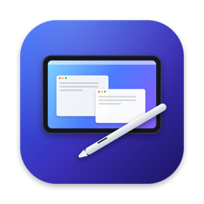
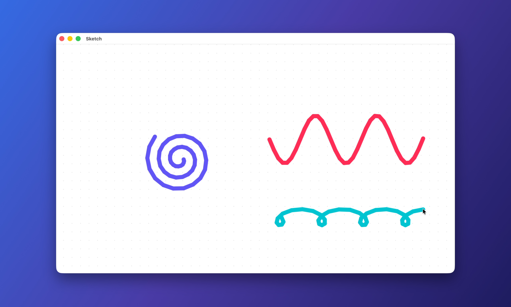
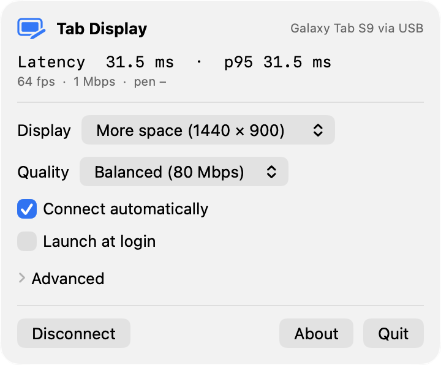
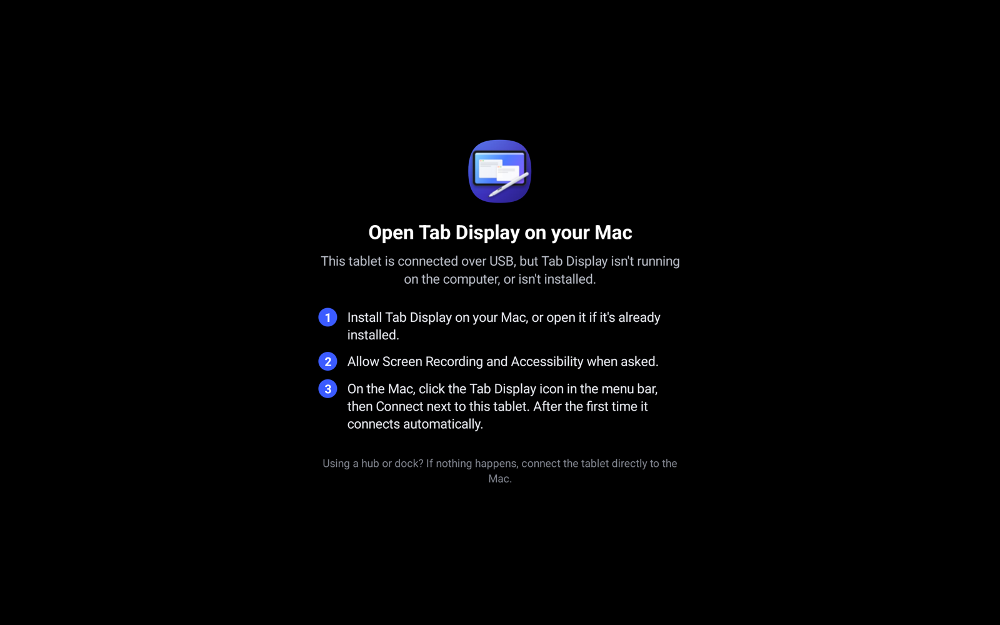

Extended desktop over USB
Over a USB-C cable. Plug in and the tablet becomes a second display.

Tab DisplayTab Display is a Mac menu bar app that streams your desktop to an Android tablet over a USB cable. Pen and touch work like a real display.

The Mac menu shows status and live latency. The tablet explains what to do when it isn't connected.


Connect the tablet with a USB-C cable.
Tab Display creates a virtual display and streams it over the cable.
Stylus and touch work like a real display, with pressure and tilt.
The features that make a second display feel like a real one.
Over a USB-C cable. Plug in and the tablet becomes a second display.
HiDPI at the tablet's native resolution. Text sharpens when the screen is idle.
Hover moves the pointer, the side button right-clicks, and it works in pressure-aware apps.
One- and two-finger scrolling, tap to click, and two-finger tap to right-click.
Rotate the tablet and the Mac's display reshapes in place. Split-screen works too.
ScreenCaptureKit, VideoToolbox HEVC, USB and MediaCodec. No CPU pixel copies, about 26 ms.
The Mac app and the tablet app are both on GitHub.
Get the latest releaseTab Display installs its own tablet app over USB. You can also sideload the APK from the same release.
Over a USB-C cable. Just plug in the tablet and it becomes a second display.
If it runs Android 14 or later and has a hardware HEVC or H.264 decoder, it should work. The tablet reports its resolution, size, refresh rate and decoders, and the Mac adapts.
About 26 ms on average from the Mac compositing a frame to it reaching the tablet's screen, on an M3 MacBook Air with a Galaxy Tab S9. The menu shows a live latency chart.
Tab Display captures its virtual display with ScreenCaptureKit, so macOS shows the purple screen-recording indicator while the tablet is connected.
Yes. Tab Display is free and open source.